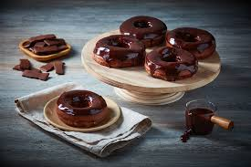

Ingredientes:
- 2 ½ tazas de harina
- ½ taza de azúcar
- 1 cucharada de levadura
- ½ taza de leche tibia
- 2 huevos
- 50 g de mantequilla derretida
- 1 cucharadita de esencia de vainilla
- 1 taza de azúcar glas
- 2 cucharadas de leche para el glaseado
Preparación:
- Mezcla la harina, el azúcar y la levadura.
- Agrega la leche tibia, los huevos, la mantequilla y la vainilla, mezclando hasta formar una masa suave.
- Deja reposar la masa durante 1 hora hasta que duplique su tamaño.
- Extiende la masa y corta las donas con un molde.
- Fríe en aceite caliente hasta que estén doradas.
- Para el glaseado, mezcla el azúcar glas con la leche.
- Cubre las donas con el glaseado y deja reposar unos minutos.
- ¡Disfruta de tus deliciosas donas! 🍩